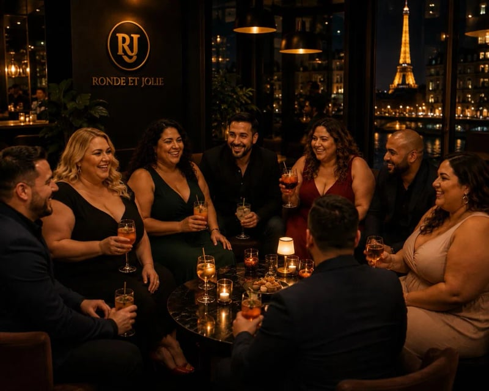

Dîners privés
Tables de 8 à 12, dans des restos triés sur le volet. L'occasion de se rencontrer dans la vraie vie.
Bienvenue dans la communauté
Rejoins un espace bienveillant où chaque membre compte.
Partage, découvre et participe à des expériences authentiques,
en ligne comme en présentiel.



Notre communauté
Depuis 2018, on rassemble celles et ceux qui croient qu'on est plus beaux à plusieurs. Sans jugement, sans étiquette.
Ce qu'on fait ensemble
Six grandes familles d'activités, pensées pour créer du lien — en vrai, pas en émojis.
Tables de 8 à 12, dans des restos triés sur le volet. L'occasion de se rencontrer dans la vraie vie.
Rooftops, bars à vins, lieux insolites. Une fois par mois, on ouvre la soirée.
Week-ends et séjours organisés clés en main. Londres, Marrakech, Lisbonne, Reykjavik…
On apprend, on rit, on mange. Avec des chefs qui savent recevoir.
Yoga, sport doux, retraites zen. Le corps et l'esprit, à ton rythme.
Expos, concerts, théâtre, opéra. Le beau, partagé.
À l'agenda
Trois dates à noter. Réserve avant qu'elles soient complètes.
Une terrasse, une vue, et nos meilleures bouteilles. Tenue habillée recommandée.
Avec le chef Marco. On prépare, on dîne, on repart avec les recettes.
Spa, plage, dîner d'huîtres. Une bulle entre soi.
Notre histoire
Ronde et Jolie est née d'un constat simple — trop de gens formidables passaient à côté les uns des autres faute d'un cadre où se rencontrer vraiment.
Alors on a créé cet endroit. Pas un site, pas une appli : une communauté. Vivante, exigeante, bienveillante.
Aujourd'hui, plus de 2 500 membres partagent nos soirées, nos voyages, nos ateliers. Tu seras le prochain ?
« On ne cherche pas à plaire à tout le monde.
On cherche à rassembler les bonnes personnes. »